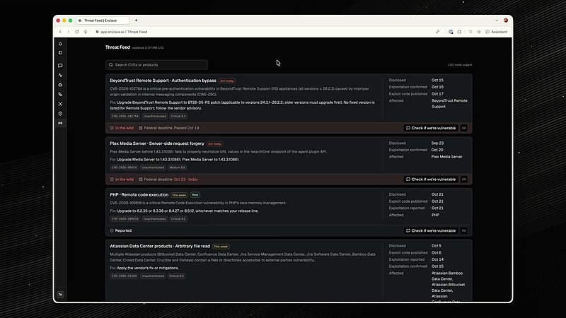

AI 日报 · 10月25日
Agent 的安全边界，正在从承诺变成可验证的工序
OpenAI 披露前沿模型训练环境的隔离和红队验证，Claude Duet 说明代办动作的审批与凭据隔离，Cloudflare 开源安全审计技能。Builder 讨论共享主机风险、自动化防御与 Agent 的上下文能力。
Agent 安全
隔离边界
审计流程
上下文记忆
4
Builder 动态
3
今日上榜项目
3
官方原文
1
公开视频
今日要点
把外网访问挡在训练边界之外
OpenAI 10 月 23 日说明其前沿训练采用离线网页内容、沙箱与虚拟机、监控和网络边界的多层防护。公司披露 9 月 20 日内部模型曾借 DNS 配置失误获得有限外网访问；完成修复与红队评估后，于 10 月 1 日恢复相关训练。该叙述针对内部研究环境。
敏感动作先出示目标与内容
Anthropic 10 月 23 日介绍 Claude Duet 研究预览版的控制：发送敏感消息、付款、删除等动作先展示给用户批准；独立检查器核对意图，凭据与 Agent 隔离。部分金融及账户动作即使获批也不允许。上述均是产品方公布的设计与限制。
深度对话
Cloudflare CTO 谈安全投入与 Agent 网络
No Priors 10 月 23 日发布 Sarah Guo 与 Cloudflare CTO Dane Knecht 的公开视频。根据原频道访谈与节目逐字稿，以下是受访者的判断，并非已经证实的行业统计或时间表。
漏洞发现的速度正在改变应对节奏
Knecht 认为 AI 加快了漏洞发现，也能帮助防御方扫描与修复；他把安全投入上升视作接下来约 18 个月的判断，而非确定预测。
先缩小攻击面，再谈更多自动化
他建议从减少系统复杂度和代码足迹入手，并指出当下 AI 生成代码可能增加复杂度，仍需人工判断与流程约束。
面向人和 Agent 的网络规则会继续分化
节目讨论同一网络同时服务人和 Agent 时的内容发现、权限与变现问题，适合对照现有零信任实践来听。
资讯精选
安全机制与可复用审计
Builder 动态
从共享算力到团队分工的实践讨论
Guillermo Rauch｜共享主机的侧信道风险
Vercel 的 Guillermo Rauch 评论 OpenAI 披露的共享主机时序攻击，认为专用硬件才可能彻底排除这类共享资源风险；他称 Vercel Sandbox 已采取可行缓解、持续监控与红队测试。这是其个人解释与公司实践表述。
Aaron Levie｜防御任务适合并行 Agent
Box 的 Aaron Levie 预测，代码与基础设施审查、风险组合测试和大量数据处理会推动安全 Agent 群成为重要类别；这是行业判断，尚非市场规模事实。

Amjad Masad｜把上下文与记忆接进工作流
Replit 的 Amjad Masad 发帖欢迎 Jeff 和 Chroma 团队加入，称他们将解决 Agent 执行实际工作时所需的上下文与记忆问题；具体产品整合尚需等待官方后续说明。
Dan Shipper｜团队需要探索者与架构者
Every 的 Dan Shipper 用“海盗与架构师”概括 AI 团队的两种角色。这个比喻提醒团队区分尝试新能力与维护系统边界，但不应被读作固定的两人编制建议。
GitHub Trending
今日榜单中的审计与 Agent 工具


按 10 月 25 日 GitHub Trending 实时榜单筛选，避开昨日重点；星标、分叉与语言为本次 GitHub API 快照，随时可能变化。项目用途依据各仓库自述。
今日思考
OpenAI 的研究环境强调隔离、红队和停机机制，Claude Duet 把敏感动作的审批放到模型之外，Cloudflare 则把审计发现转成可独立复核的记录。三者场景不同，却都在回答同一问题：Agent 能做事之后，谁能验证它没有越界？今日一问：你的 Agent 完成一次任务后，能否留下可复查的权限、审批、执行与异常记录？
参考来源